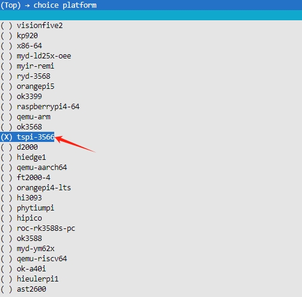
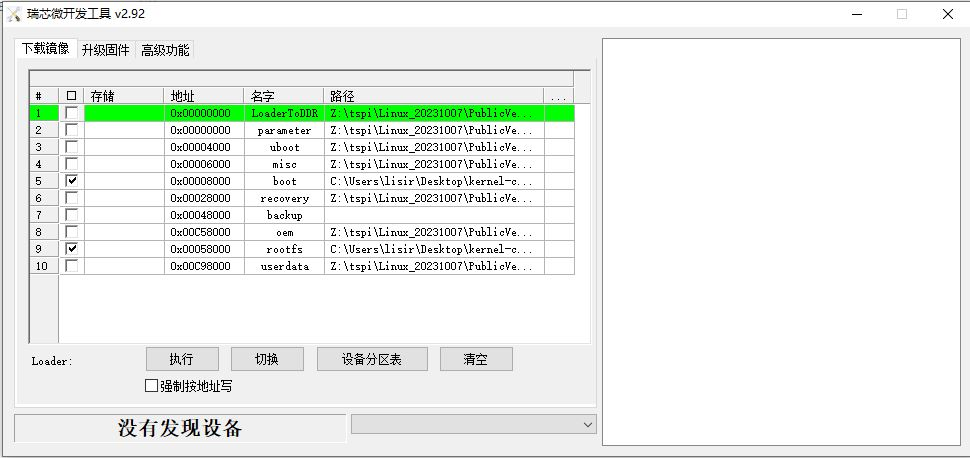

泰山派镜像构建与使用¶
本章主要介绍openEuler Embedded中嘉立创的泰山派的构建，使用和特性介绍。
泰山派镜像构建指导¶
参照 oebuild安装步骤 完成oebuild安装，并详细了解构建过程
执行构建环境初始化命令
# oebuild_workspace表示oebuild的工作空间，这个名字可以随意取 oebuild init oebuild_workspace
根据上一步提示执行 cd 命令与 oebuild update 命令，如果出现错误请按照提示解决，一般是需要安装容器软件以及添加容器用户
执行generate命令选定泰山派单板
oebuild generate具体界面如下图所示：

在choice platform选定tspi-3566：
然后进入镜像编译目录，镜像编译目录一般是以 build/tspi-3566 结尾
进入构建交互终端
# 执行完后，已进入容器环境 oebuild bitbake
构建镜像
bitbake openeuler-image构建SDK
bitbake openeuler-image -c do_populate_sdk烧录二进制介绍
构建产物存放的目录为当前编译目录下output/<timestamp>/
boot.img: uboot+Image的openEuler Embedded内核镜像
openeuler-image-tspi-3566-<timestamp>.rootfs.tar.gz
openeuler-glibc-x86_64-openeuler-image-armv8a-tspi-3566-toolchain-latest.sh*
注意：镜像和SDK所在的目录因timestamp不同而不同。
泰山派镜像烧录¶
瑞芯微烧录仅支持windows系统平台，下载以下两个软件：
DriverAssitant（外设驱动软件）
RKDevTool（镜像烧录软件）
下载地址为：
资料下载 链接：https://pan.baidu.com/s/1HtnpytCBBqBOqZi8mfV4VQ?pwd=qcxx 提取码：qcxx 工具存放地址为：立创·泰山派开发板资料/第07章.【立创·泰山派】开发工具
将两个软件包分别下载，并解压
对于DriverInstall软件，双击DriverInstall.exe文件来运行安装程序。根据系统的安全设置，可能需要管理员权限来运行该程序。如果出现安全提示，请给予管理员权限。如果之前没有安装过直接点击安装即可，如果之前安装过驱动，需要先点击卸载旧驱动，然后再点击安装“弹出安装驱动成功弹窗”证明安装成功。
对于RKDevTool是无需进行安装操作的，直接双击RKDevTool_Release运行烧录工具
使用typec数据线连接泰山派开发板和电脑，泰山派开发板有三个案件，先按住REC按钮不放，接着按下RST复位按键并松开，当烧录软件中出现“发现一个LOADER设备”后松开REC按钮，就可以进行下一步操作了
在 下载镜像 中选中boot一栏，并点击路径一栏将我们构建出来的boot.img加载上，再选中rootfs一栏，并点击路径一栏将我们构建出来的openeuler-image-tspi-3566-<timestamp>.rootfs.tar.gz加载上，如下图：
点击执行，等待将boot.img和rootfs烧录到emmc中
泰山派应用开发¶
前面构建SDK的产物为：openeuler-glibc-x86_64-openeuler-image-armv8a-tspi-3566-toolchain-latest.sh*
具体SDK的应用开发请阅读：基于SDK的应用开发/#sdk